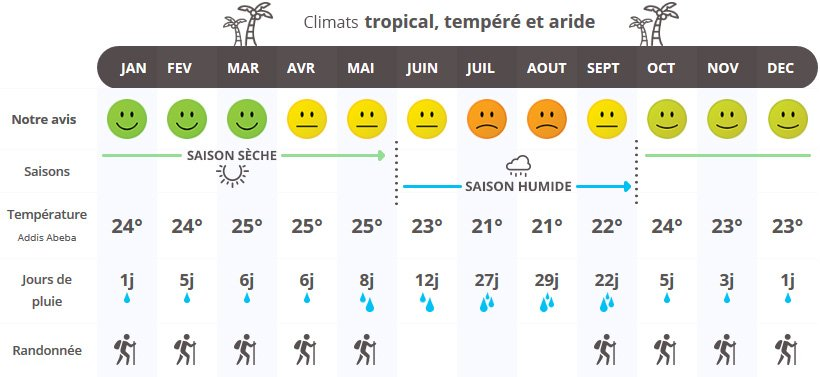

VOYAGE INOUBLIABLE EN ETHIOPIE
Les conseils de Denis, notre Globe-Trotter, pour un voyage authentique et inoubliable en Ethiopie
Située à l’Est du continent africain, dans la Corne de l’Afrique, l’Éthiopie est un pays fascinant et méconnu qui vous éblouira par la beauté de ses paysages et vous émerveillera par la richesse de son patrimoine culturel et architectural, remarquablement conservé. Traversée par la vallée du Grand Rift, ″Berceau de l’humanité″ où furent retrouvés les restes de Lucy, l’Éthiopie alterne plaines verdoyantes, sommets escarpés, étendues désertiques, grands lacs, chutes d’eau impressionnantes et profonds canyons. La plus grande partie de son territoire est parcourue de hauts plateaux de plus de 2000 mètres d’altitude, avec le Ras Dachan comme point culminant.
Quand partir en Ethiopie?
Le climat en Éthiopie est très variable en fonction de l’altitude. Certaines parties du pays connaissent ainsi un climat plutôt frais, dans les régions montagneuses notamment, tandis que dans les basses terres, on retrouve un climat aride. Néanmoins, globalement, les températures sont plutôt tempérées dans la majorité des endroits incontournables à visiter.
Une première saison des pluies plutôt légère sévit à partir de mars puis celle-ci se renforce de juin à octobre. Au sud-ouest du pays et notamment au parc national de Mago dans la vallée de l’Omo, la saison des pluies sévit déjà fortement dès le mois de mars.
Certaines régions du pays plutôt désertiques sont également vivement déconseillées tant la chaleur y est insupportable. Dans le sud-est, la région semi-désertique des Somalis est, par exemple, extrêmement chaude. Plus au nord, du côté de la région d’Afar, le climat est caniculaire toute l’année.
Un premier aperçu de son patrimoine
Video promotionnelle travel.earth
Conseils pour connaitre ce patrimoine
Que voir?
Le parc national du Simien
Qualifié par l’Unesco comme « l’un des paysages les plus spectaculaires au monde », le parc national du Simien est sans conteste l’un des plus beaux joyaux d’Éthiopie, doté d’une exceptionnelle biodiversité et de paysages à couper le souffle.Harar
la ville d’Harar est considérée comme la quatrième ville sainte de l’Islam. Classée au patrimoine mondial de l’Unesco, cette cité historique fortifiée a su préserver son caractère authentique.Gondar
Ancienne capitale d’Éthiopie, la ville de Gondar située au nord du pays et perchée à plus de 2200 mètres d’altitude abrite de jolis trésors classés au patrimoine mondial de l’Unesco en 1979. Il est ainsi possible de découvrir les vestiges historiques de cette ancienne cité impériale.Lalibela
La ville de Lalibela est réputée pour ses églises taillées dans la roche datant du XIIe et XIIIe siècle. Cette cité monastique perchée à 2630 mètres d’altitude abrite plus exactement onze églises médiévales.Addis-Abeba
La bouillonnante capitale d’Ethiopie est à la fois le cœur économique et culturel du pays. Une virée essentielle pour effectuer ses achats de souvenirs dans le célèbre marché de la ville, le Merkato, le plus grand marché à ciel ouvert d’Afrique.